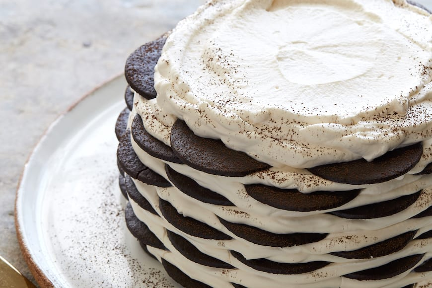

Ice Box Cake Recipe
Ingredients:
- 3 c. heavy cream, cold
- 1/2 c. powdered sugar
- 1 tsp. pure vanilla extract
- 64 Oreo thins or chocolate wafers, plus more for serving
Directions:
- In a large bowl using a hand mixer (or in the bowl of a stand mixer using the whisk attachment), beat heavy cream, powdered sugar, and vanilla until stiff peaks form.
- Spread a very thin layer of whipped cream onto the bottom of an 8" springform pan, then top with an even layer of whole Oreos or cookies. (You should need 16!) Spread more whipped cream on top of cookies and repeat layering process until you have 4 layers of cookies.
- Spread a final layer of whipped cream on top. Refrigerate cake until cookies have softened, at least 4 hours and up to overnight.
- When ready to serve, garnish with crushed cookies and slice.
Link to original recipe
cooking